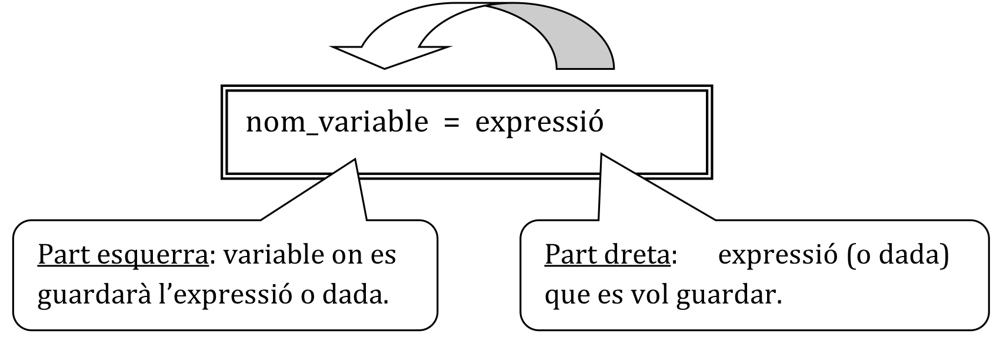
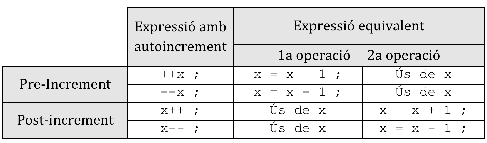
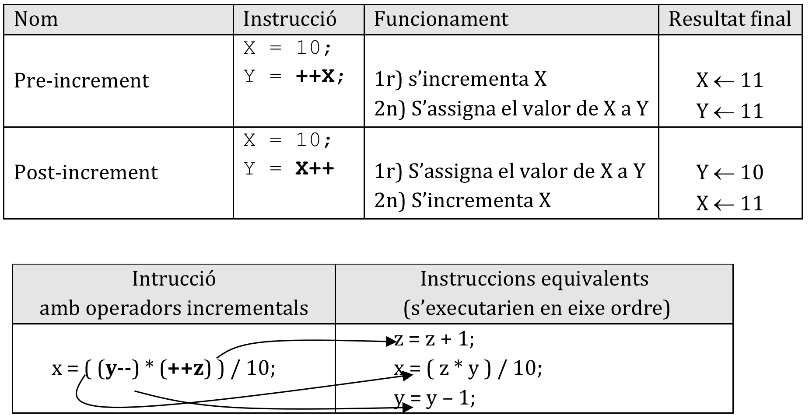
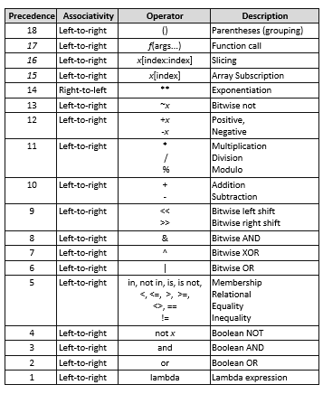
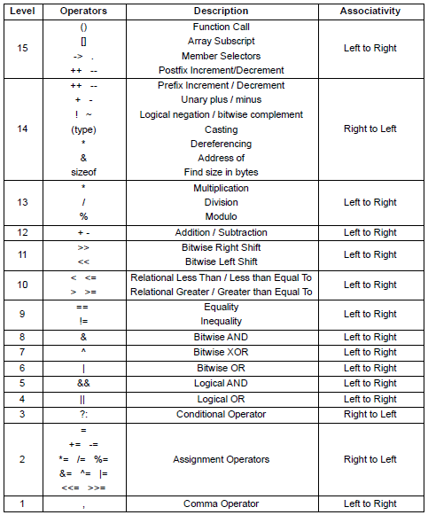

2. Tipus de Dades. Operadors
2.1 Tipus de dades
Els tipus de dades són els distints tipus d'informació que podem guardar a les nostres variables. Han anat evolucionant al llarg del temps, i cada vegada accepten valors més grans degut a les potències i capacitats cada cop més grans dels ordenadors.
2.1.1 Tipus elementals
Partirem de la taula de tipus que s'aplica en C i en Java, que estan molt més detallats.
| TIPUS | SIGNIFICAT | BYTES | RANG DE VALORS |
|---|---|---|---|
| str | Cadena de caràcters | 4 per caràcter en UTF-8 | Segons codificació |
| int | Enter | 2 o 4 | [-215 . . 215] |
| boolean | Lògic | 1 bit | True o False |
| float | Real simple precisió | 4 | [-3,438 . . 3,438] |
| double | Real doble precisió | 8 | [1,7308 . . 1,7308] |
| void o null | (cap valor) | 0 | - |
El tipus void/null serveix per a representar l’absència de valor, com per exemple en funcions que no retornen cap valor o quan no sabem alguna informació. Imaginem que tenim una variable entera temperatura, de la qual no sabem el valor. No podem dir que la temperatura és zero, ja que podriem pensar que si l'hem medit ( i evidentment fa fret).
2.1.1 integer o int
Serveix per a representar nombres enters (sense decimals) amb signe. El tamany està limitat a la memòria del dispositiu. Per defecte el número enter es representa en el sistema decimal, però podem representar-lo en binari, octal i hexadecimal, afegint al principi del numero el prefix de la base en la qual ho representem:
Representacions de nombres enters
| Prefixe | Significat | Base |
|---|---|---|
0b o 0B |
Binari | 2 |
0o o 0O |
Octal | 8 |
0x o 0X |
Hexadecimal | 16 |
Adonar-se que l'ordre de sortida print ho mostra sempre en decimal.
2.1.2 float
Serveix per a representar els numeros reals en notació de coma deximal. Podem representar també en notació científica afegint una E seguit d'un enter positiu o negatiu
Ús de tipus reals
Els números reals estàn acotats:
- Els numeros més grans, positiu i negatiu:
1.79e308i-1.79e308 - Els números més xicotets, positiu i negatiu:
5e-324i-5e-324
NOTA:
Pythontambé supporta els números complexes, que els veurem al llarg del curs
Modificadors dels tipus elementals
Servixen per a alterar els rangs dels tipus elementals vistos anteriorment. Existixen 2 tipus de modificadors:
- Modificadors de longitud:
short→ per a enters (opció per defecte en alguns compiladors)long→ per a enters i reals. Dobla el rang
- Modificadors de signe (per a enters):
signed→ amb signe (opció per defecte)unsigned→ sense signe
Els valors màxims i mínims de cada tipus estan definits en les llibreries de cada llenguatge, i canvia segons els compiladors.
En Python hi han menys tipus, però tot i això no perdrem res de potència, donat que, per exemple els límits a partir de Python3 no tenen topes
2.1.3 bool
Els valors lògis vertader i fals, especificats per True i False.
2.1.4 string o str
El tipus string no existeix al llenguatge C, i es veu com una successió de caràcters. En Java ja va apareixer com a objecte i en Python ja és un tipus bàsic. Un string és una successió de 0 o més caràcters dins de cometes simples o dobles. Aquestes cometes no poden apareixer dins de la cadena, ja que la primera obri i l'última tanca:
| Python | |
|---|---|
Posibles solucions:
- Intercanviar cometes dobles per simples, segons necessitats
- Fer servir el caracter contrabarra
\que anula el significat dels simbols especials. Aquest caràcter es llig caracter deescapeod'escapament - Fer servir com a inici de la cadena la cometa simple
'i dins ja podem fer servir la cometa doble o vicerversa.
Combinacions de símbols de cadena
Aquest caràcter té molts usos també, ja que de vegades combinat amb altres caràcters podem aconseguir caràcter no imprimibles o de control:
| Seqüència de Escape | Significat |
|---|---|
\a |
Alert. S'emet un pitit de l'altaveu |
\b |
Backspace. S'esborra un caràcter |
\n |
Line Feed. S'avança una línia |
\r |
Carriage Return. Es torna el cursor al principi |
\t |
Tabulador. S'avança |
Més exemples:
2.2 Tipus compostos
Els tipus simples serveixen quan tenim que guardar una informació simple, és a dir formada per una sóla dada. Exemple són una temperatura, un nom, una edat, etc. La cosa ja canvia quan tenim que guardar una informació formada per varies dades, com per exemple una data de naixement. Com és evident, aquesta informació està formada per 3 informacions simples (dia, mes i any). Altre exemple seria una adreça, formada per tipus de carrer, nom del mateix, número, escala, codi postal, etc.
Aquest tipus de dades s'estudiaran més endavant, i són tipus que els definirem els programadors, prenent com a base els bàsics que hem vist anteriorment.
2.3 Declaració de variables
Una variable és una porció de memòria (RAM), representada per un nom (identificador) on es guardarà un valor que pot variar al llarg de l’execució d’un programa. Els llenguatges de programació, depenent de com es declaren les variables poden ser de tipat fort o dinàmic. Anem a veure-ho i veurem exemples.
Els llenguatges fortament tipat obliguen de indicar la variable de quin tipus serà abans de fer-la servir. Exemples d'aquest llenguatges són C i Java. Desprès al moment de fer servir les variables els llenguatges vigilen i controlen que el valor que s'emmagatzema correspon al tipus de la variable. Cas de no correspondre donarà error.
Llenguatge fortment tipat
Els llenguatges de tipat dinàmic, com poden ser Python o PHP no cal declarar la variable prèviament, simplement si ens cal una variable, li assignem el valor que vullguem i ja està. Mai ens ocorreran les situacios d'error d'abans. EL que ens pot ocòrrer és que una variable que contenia un numero, li assignem altre tipus i ens porte a situacions inconsistents. Tindrem que tenir molta cura en aquests casos.
Llenguatge de tipat feble
El tipat de
Pythones coneix també com a Duck typing
2.4 Àmbit i visibilitat
Les variables (i constants) poden definir-se/declarar-se en qualsevol part del programa, però segons el lloc on siguen declarades, les podrem fer servir en tot el programa (globals) o només en alguna part (locals).
- La visibilitat és la propietat que indica si es pot accedir o no a una variable en un punt determinat del programa.
- L’àmbit és la zona del programa on és visible una variable.
A partir d’estos conceptes podem diferenciar entre objectes locals i globals:
- Objectes locals: Variables (o constants) declarades dins d’un bloc o funció i, per tant, visibles només en l’àmbit d’eixe bloc i dins dels seus sub-blocs.
- Objectes globals: Variables (o constants) declarades al programa principal (fora del main) i, per tant, visibles des de qualsevol lloc del programa.
Tenir en compte que:
- En
CiJavaanomenem bloc a tot allò que està entre claus { }. Per tant, qualsevol funció, com veurem més endavant, és un bloc. - En
Pythonun bloc són totes aquelles instruccions que estan al mateix nivell d'indentació, mitjançant tabulacions.
Cal tindre clar que si es declaren variables en un bloc (locals) oculten les variables amb el mateix nom globals.
Aquests conceptes s'estudiaran més endavant, quan treballem en la programació modular
2.5 Operadors i Expressions
Per tancar aquest tema anem a estudiar els operadors que disposem als nostres llenguatges, així com la manera d'interactuar amb l'usuari per a demanar-li dades i mostrar-li els resultats. Mitjançant els operadors podrem construir expressions complexes per a formar els nostres algorismes.
2.5.1 Operadors aritmètics
Anem a veure els operadors dels llenguatges de programació. La majoria són similars que Java o altres llenguatges, però hi han xicotetes diferències:
| Significat | Python |
Java |
Exemple |
|---|---|---|---|
| Potència | ** |
no hi ha | 3**2 retorna 9 |
| Producte | * |
* |
3*6 retorna 18 |
| Divisió | / |
/ |
10/2 retorna 5 |
| 11/2 retorna 5.5 en Python | |||
| 11/2 retorna 5 en Java (divisió entera) | |||
| Divisió entera | // |
(Python) |
11/2 retorna 5 |
| Residu | % |
% |
12/5 retorna 2 (residu de la divisió entera) |
| Suma | + |
+ |
12 + 7 retorna 19 |
| Resta | - |
- |
12 - 7 retorna 5 |
No cal gaire explicació, donat que son els operadors matemàtics de sempre. Tindre especial cura en la divisió entera.
2.5.2 Operadors relacionals
Servixen per a comparar 2 expressions, retornant un valor lògic: vertader o fals. Son els mateixos en Python i en Java:
| Operador | Significat |
|---|---|
| < | Menor |
| > | Major |
| == | Igual |
| != o <>(sols Python) | Distint |
| <= | Menor o igual |
| >= | Major o igual |
2.5.3 Operadors lògics
Els operadors lògics són els de la taula següent. Serveixen per a composar distintes expressions lògiques:
Python |
Java |
Significat |
|---|---|---|
or |
| | |
El OR lògic |
and |
&& |
La AND lògica |
not |
! |
El NOT lògic |
Example
Curtcircuit d’expressions
Si recordem les taules de veritat de les expressions lògiques, podem afirmar que:
false AND ... → false: false and els que siga sempre és falsetrue OR ... → true: true or el que siga sempre és true
Per tant, com les expressions s’avaluen d’esquerra a dreta, en el moment en què puga assegurar el valor final de l’expressió lògica (true o false), pararà d’avaluar-la. Esta manera de treballar s’anomena curtcircuit d’expressions. Això ens dóna un benefici pel que fa a control d’errors i a velocitat d’execució.
Exemples:
Si el dto_1 és major que 0, ja no es comproven les altres 2 expressions i passa a executar-se directament el print.
| Python | |
|---|---|
Només es farà el printf si el valor de x és negatiu.
Exercici resolt Pensa què passaria en cada cas sense i amb curtcircuit d’expressions.
Solució
A la versió 1:
A la versió 2 cap error
NOTA: l'ordre pass es fa servir quan volem deixar en blanc algun bloc de codi, com és el cas que sols volem provar les condicions
2.6 Operadors d’assignació
En tots els llenguatges de programació l’operador d’assignació és el símbol igual =. Aques operador necessita una variable a l'esquerre i una expressió a la dreta. El funcionament consistix en assignar a la variable el valor de l'expressió prèviament calculada. Funciona avaluant primer la part de la dreta, obtenint el seu resultat i assignant-lo a la variable de l’esquerra.

Per exemple:
Per descomptat, l’assignació és destructiva, ja que elimina el valor antic de la variable. És a dir, només pot guardar una dada en un moment determinat.
Els llenguatges també permet assignar un valor a diverses variables en una assignació encadenada. Van assignat-se els valors de dreta a esquerre. a=b=c=d=2. L’expressió anterior és equivalent a fer les següents assignacions (i en eixe ordre):
Operadors aritmètics reduïts (Operació-assignació)
Existixen formes compactes d’escriure algunes operacions aritmètiques molt freqüents. Són els operadors reduïts:
• Operadors d’actualització: +=, -=, *=, /= i %=
• Operadors autoincrement i autodecrement: ++, -- (sols Ci Java)
Estos operadors fan 2 coses: una operació i una assignació.
Operadors d’actualització
A banda del clàssic =, existixen 5 operadors més d’assignació, que estan formats amb els operadors aritmètics i l’operador =.
| Assignació reduïda | Assignació equivalent |
|---|---|
x += y |
x = x + y |
x -= y |
x = x - y |
x *= y |
x = x * y |
x /= y |
x = x / y |
x //= y |
x = x // y |
x %= y |
x = x % y |
On x és una variable i y una expressió, constant o variable.
Example d'assignacions
Operadors autoincrement i autodecrement (Javai C)
Els operadors incrementals ++ i -- són operadors unaris que incrementen o decrementen en 1 unitat la variable a qui acompanyen.
- Si l’operador va davant (
++x), primer s’incrementa la variable i després s’utilitza el valor de la variable en l’expressió on apareix. - Si l’operador va després (
x++), primer s’utilitza el valor de la variable en l’expressió i després s’incrementa la variable.


Fixa't que pots trobar concursos de programació ofuscada
2.7 Altres operadors
2.7.1 Operador condicional ? : (Java)
Sintaxi: condició ? expressió_sí : expressió_no ;
Exemples d’ús:
- Assignar un valor diferent a una variable segons una condició:
| Java | |
|---|---|
-
Mostrar un valor diferent segons una condició:
Text Only -
Executar una instrucció diferent segons una condició:
Text Only
Nota: també es poden posar operadors condicionals dins d’altres.
Exercici proposat 1 Fes un programa que, donats 2 variables enteres, mostre quin és el número més gran i quin el més menut.
2.7.2 Operador sizeof
La quantitat de bytes que s’utilitza per a guardar un determinat tipus de dades depén de la versió del compilador i del tipus de processador que s’utilitze. Per tant, perquè el nostre programa puga ser portable, de vegades és necessari saber quants bytes ocupen les variables amb les quals treballarem.
Per a això, C i Java disposa de l’operador sizeof(), qui calcula la quantitat de bytes que ocupa la variable o tipus que li posem dins dels parèntesis x = sizeof( variable o tipus ).
En Python per a calcular-ho podem fer:
2.8 Expressions
Ara que ja hem vist els tipus d’operands i els operadors, ja podem formar expressions. Què pot ser una expressió?
- Un valor (constant literal)
- Una constant amb nom o una variable
- Una funció
- Una combinació dels elements anteriors amb operadors, els quals han de complir certes regles de construcció.
- Res més és una expressió
2.9 Conversions de tipus
Dins d’una expressió poden aparéixer dades de distints tipus. Aleshores, el compilador ha de prendre una decisió de com fer el càlcul i no donar error.
2.9.1 Promoció interna
Si en una expressió hi ha dades de diferent tipus, el compilador transforma els tipus d’una grandària inferior al tipus de la dada de grandària superior.
char → int → unsigned → long → unsigned long → float → double → long → double
Nota Com Python no te tipat, això no passarà i sempre es canviarà el tipus de dades
2.9.2 Promoció per assignació
Esta conversió la fa el compilador quan s’intenta assignar a una variable una expressió de diferent tipus.
- (int) = (char) → no hi ha problema.
- (char) = (int) → s’elimina els bytes menys significatiu.
- (int) = (float) → es trunca la part fraccionària.
- (float) = (double) → s’arredonix el número
En els casos on es perd certa informació ens pot portar a resultats inesperats. Per tant, en eixos casos és recomana fer conversions forçades.
Nota Com Python no te tipat, això no passarà i sempre es canviarà el tipus de dades.
2.9.3 Promoció forçada o Càsting
En este cas no esperem que siga el compilador qui faça la promoció (conversió de tipus), sinó que serà el propi programador qui indique quina dada ha de canviar de tipus i a quin. S’especifica posant el tipus entre parèntesi just abans de l’expressió en Java o fent una crida a la funció que converteix el tipus en Python:
Java→(tipus) expressióPython→tipus(expressió)
Exemples:
2.10 Precedència i associativitat d’operadors
Ací tenim una relació dels operadors ordenats per precedència de major a menor. En cas d’igualtat de precedència de diversos operadors en una expressió, l’associativitat ens diu per on es comença a avaluar.
Precedència i associativitat en Python

Precedència i associativitat en C i Java

2.11 Entrada i eixida en Python
Les instruccions d’entrada i eixida (a partir d’ara E/S) permeten la construcció de programes interactius. És a dir, introduir dades des de teclat (input) i visualitzar en pantalla els resultats (print).
Les funcions d’E/S es dividixen en 2 grups:
- Sense format → es mostren els text i numeros com apareixen
- Amb format → es formaten els numeros d'alguna manera especial
2.11.1 Sortida de dades: la funció print
Aquesta funció simplement mostra per pantalla allò que li se passa, que és un text. Anem a anar vegent-la de manera incremental, amb un codi comentat:
Example
com podem veure print rep un o més texts, que poden estar entre cometes simples o dobles. Aques texts els separa per blancs i afig un bot de línia al final de tota la unió de texts. Les cadenes de text poden concatenar-se també amb l'operador +, però llavors haurem de separar-les nosaltres l'espai en blanc.
La sintaxi completa és:
print(object(s), separator=separator, end=end, file=file, flush=flush)-object(s)→ son les cadenes de text o objectes que volem imprimir. -separator=separator→ El símbol que volem fer servir per a separar els objectes anterior. Sinó posem res és l'espai en blanc -end=end→ El simbol que farem servir al final de tota la impressió. Sinó posem res és elentero bot de línia. -file=file→ Sinó diguem res el text que s'escriu va a pantalla. Cas de voler enviar-ho a un fitxer, ací indicarem a quim (ho veurem al final del curs). El fitxer que simbolitza la pantalla éssys.stdout(el standard output del sistema) -flush=flush→ aquest serà un valor boolea que indica si volem que la sortida es guarde (True) per a volcar-la tota de colp o si volem que tal i com s'execute es mostre (Falsei opció per defecte). Quan volem ferflushtot el que escrivim no es mostra i es guarda en unbuffero memòria temporal, fins que vullguem mostrar-ho tot de colp.
Example
Especificant el format
Combinant texts i nombres
vegem que:
- Si posem valors numerics amb els separadors no hi han problemes
- Si concatenem amb l'operador
+si hi han problemes. Aquest problemes els podem solucionar convertint els números a cadenes amb la funcióstr()
Imaginem que volem imprimir certes hores del dia. EL que fariem és:
| Python | |
|---|---|
la sortida que produeix és:
| Text Only | |
|---|---|
observem que cada cadena té una longitud distinta. El problema és que els numeros enters ocupen 1 o 2 caràcters, depenenet del número de xifres que tenen, i que els numeros decimal també varien la seua longitud. Això ho podem arreglar amb els especificadors de format:
- Per a números enters
%nd, onnindica quants caràceters ha de omplir com a mínim - Per a números reals
%n.mfonnindica quants caràceters ha de omplir com a mínim imindica els decimals que ha de mostrar
| Python | |
|---|---|
| Text Only | |
|---|---|
Més formats de cadenes
Les cadenes un cop construides les podem formatar i aliniar a esquerre, centre i dreta, tal i com es veu:
Com es pot veure les función .rjust, .center i .ljsut justifiquen el text al que s'apliquen, ocupant els caràcter que s'indiquen en el primer argument, i omplint els buits amb el caràcter que s'indica en el segon argument (per defecte blanc).
Dins de les cadenes poden fer-se servir també els caràcters especials: \a, \b, \n,\r,\t i \\ per a una contrabarra.
2.11.2 Entrada de dades: la funció input
La funció input llig allò que l'usuari ha escrit fins que polse un enter. És molt interessant posar com a argument allò que li volem preguntar, sinó hem de fer servir abnas la funció print. Exemple:
| Python | |
|---|---|
El gran problema és que aquesta fució retorna un str i llavors, encara que el podem fer servir no podrem fer càlculs amb ells. La solució és fer un càsting o conversió de tipus segons la dada que volem llegir:
Llegir i transformar
Si volem llegir diversos arguments alhora, separats per algun caracter especial, podem fer servir la funció split de la classe str: